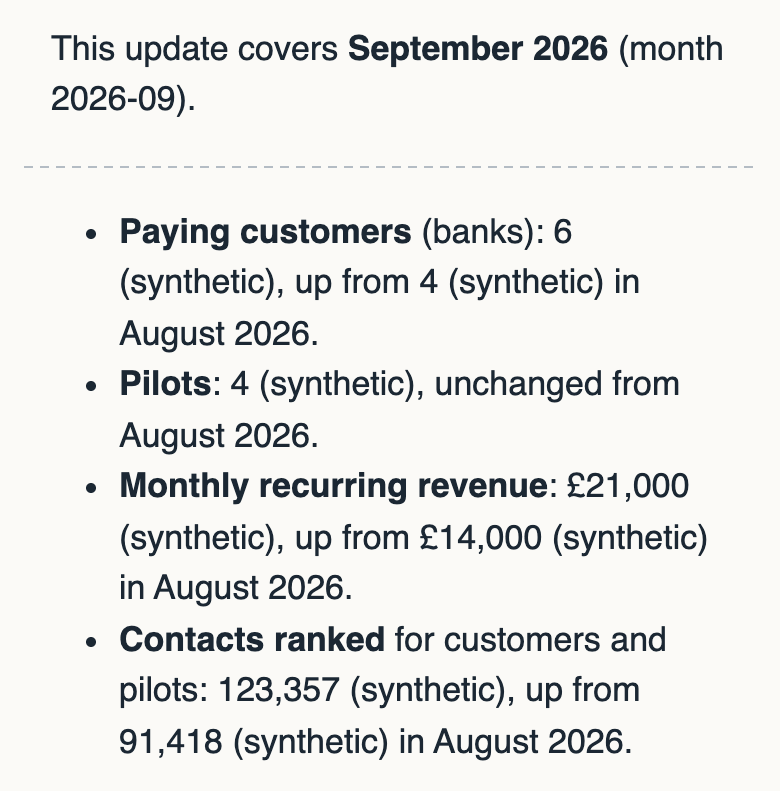
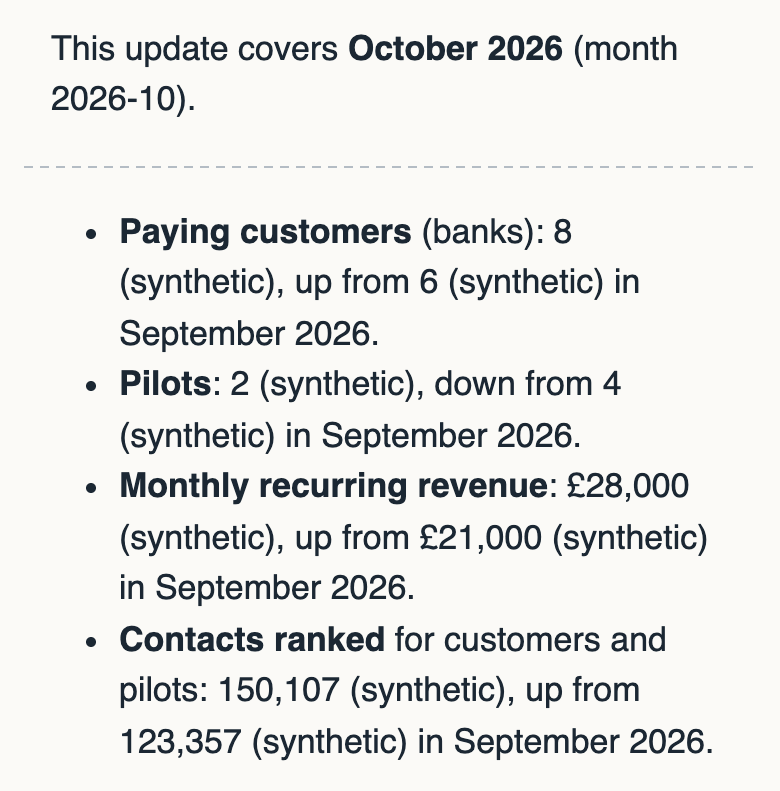

#| tags: [parameters]
# "YYYY-MM", or "latest": the last
# month in data/synthetic_business.csv
month = "latest"14 Informes que se generan solos
Palabras clave
Quarto, publicación reproducible, agentes de programación, Markdown, Python, EPUB, análisis de datos, k-means
Buena parte de lo que publica una organización es el mismo documento con números distintos: el informe mensual para inversionistas, un informe por cliente, región o equipo. Hecha a mano, cada copia parte del archivo del mes pasado, y cada una es una oportunidad de dejar en ella una cifra del mes pasado. Hecha a partir de una sola fuente con un parámetro, un valor que se da al renderizar, cada copia es el mismo documento probado, ejecutado con otro valor, y un script puede hacerlas todas y revisar cada una.
Una ilustración
Quien fundó la empresa escribe el informe de este mes como siempre: abre el del mes pasado, lo guarda con otro nombre y cambia las cifras. Ingresos, cambiados. Clientes, cambiados. La oración del tercer párrafo que dice que el mes fue el mejor hasta ahora no es una cifra, así que no se cambia. Llega a cada inversionista. Nadie mintió, y nada en el archivo podía advertirlo.
Este capítulo hace el informe mensual de Acme para inversionistas y un informe por segmento de clientes. Las cifras de negocio del informe son sintéticas, y lo dicen en cada número; las cifras del modelo que las acompañan son las de la evaluación real.
En este capítulo
- Explicar qué es un parámetro, dónde vive su valor predeterminado y cómo se pasa un valor al renderizar.
- Pedir un documento parametrizado que valide su valor y elija por código, con guardas, las palabras que dependen de ese valor.
- Renderizar un documento para cada valor con un script que nombre y revise cada salida.
- Decir dónde quedan las salidas de un documento parametrizado en un proyecto de sitio web, y por qué.
Lo que vas a construir


14.1 Un documento, muchos valores
Un parámetro es un valor que recibe un documento al renderizarse. Su valor predeterminado vive en el documento, en una celda etiquetada parameters: el month del informe terminado tiene como valor predeterminado “latest”, que el documento lee como el último mes de sus datos, así que nunca se desactualiza. El informe por segmento usa por defecto age_band 60+, y la hoja de retroalimentación, el grupo A.
quarto render update.qmd -P month:2026-06 reemplaza el valor predeterminado durante un renderizado: Quarto agrega, después de la celda de parámetros, una celda que fija el valor nuevo, y el documento se ejecuta como antes. Esa celda se ejecuta mediante papermill, un paquete de Python que el proyecto tiene que tener: sin él, un renderizado con -P se detiene con The papermill package is required for processing --execute-params.
| Pide | Quarto lo llama |
|---|---|
| un valor fijado al renderizar, con un valor predeterminado | una celda etiquetada parameters: #| tags: [parameters] |
| este valor, ahora | quarto render update.qmd -P month:2026-06 |
| muchos valores desde un archivo | --execute-params params.yml |
| una salida con el nombre de su valor | -M output-file:update-2026-06 |
Dos reglas hacen seguro un documento parametrizado:
Valida el valor
Un mes o un segmento que no está en los datos detiene el renderizado con un mensaje que enumera los válidos, en lugar de producir un informe sobre nada.
Deja que el código elija las palabras
“Subió” o “bajó”, “por encima” o “por debajo”, “el primer mes, así que no hay cambio”: elegida por el código a partir de los números tal como se imprimen, una palabra no puede contradecirlos. Pon una guarda en lo que el código no puede elegir, como un pie de figura escrito a mano.
Una guarda que repite la comparación que eligió la palabra nunca puede fallar, y no protege nada. La guarda del informe terminado revisa, en cambio, las cifras impresas. Un documento renderizado para diez meses es otras tantas oportunidades de que una palabra escrita a mano esté mal.
14.2 El informe para inversionistas
El informe se pide en dos turnos: primero el documento y su parámetro, luego la oración que compara un mes con el anterior, cuya redacción debe elegir el código.
Pídele a tu agente
Ejecuta `uv add papermill` y crea update.qmd, informe mensual para inversionistas en inglés, parametrizado por `month` (celda etiquetada `parameters`, por defecto "latest": el último mes de data/synthetic_business.csv): las cifras de negocio del mes, cada una marcada como sintética, y la versión en producción ese mes con sus métricas reales de outputs/. Si el mes no está en los datos, detente con un mensaje claro. Formatos html, docx y typst; renderiza con `-P month:2026-06` y dime dónde quedaron los archivos.
Probablemente ejecute
uv add papermill · escribe update.qmd · uv run quarto render update.qmd -P month:2026-06
Pídele a tu agente
En update.qmd, agrega el cambio respecto al mes anterior, con su redacción elegida por código a partir de los números impresos y con una guarda; el primer mes dice que no hay uno anterior. Renderiza 2026-06 y el primer mes de los datos, y muéstrame las dos oraciones.
Probablemente ejecute
edita update.qmd · lo renderiza dos veces, con -P month:…
Revísalo como lo haría quien invierte, y como lo haría quien audita. Cada cifra de negocio dice que es sintética, aquí; en tu propio informe, cada cifra nombra su fuente. Las cifras del modelo vienen de outputs/ y son las de la evaluación real. Un mes anterior a la primera versión lo dice, en lugar de inventar una cifra del modelo. Y un mes que no está en los datos detiene el renderizado: prueba -P month:2027-01.
Detente y piensa
El informe terminado se renderizó para sus dos últimos meses, 2026-09 y 2026-10, a partir de una sola fuente. Entre los dos, ¿qué oraciones deberían diferir: las cifras, el cambio respecto al mes anterior, la versión en producción? ¿Cuáles no deben?
Respuesta
Seis difieren solo en sus cifras y sus meses. Una cambia su redacción: “Pilots: 4 (synthetic), unchanged from August 2026” pasa a “Pilots: 2 (synthetic), down from 4 (synthetic) in September 2026”, con la palabra que elige el código. Dos aparecen solo en 2026-09, cuando su versión era nueva. Nueve son idénticas, entre ellas la etiqueta de sintético y la nota sobre el método: si difirieran, un parámetro se habría filtrado a un texto al que no debe llegar.
Este es el mecanismo, en el informe terminado. No hace falta leer cada línea: en su celda de parámetros, con los comentarios recortados para caber en un teléfono, lo que importa es la última línea, el parámetro y su valor predeterminado.
Y las líneas de su change() que eligen la palabra para una cifra, a partir de las dos cifras tal como se imprimen, y protegen la elección con una guarda:
printed_now, printed_before = show(now[column]), show(before[column])
word = params.direction(*(float(re.sub(r"[^0-9.-]", "", p)) for p in (printed_now, printed_before)))
claim((word == "unchanged") == (printed_now == printed_before),
f"{FIGURES[column][0]}: the printed figures agree with '{word}'.")
if word == "unchanged":
return f"{text}, unchanged from {previous_label}"
return f"{text}, {word} from {show(before[column])} {SYNTHETIC} in {previous_label}"params.direction() vuelve a leer los números de las dos cifras impresas y devuelve “up”, “down” o “unchanged” (subió, bajó, sin cambio), así que la palabra sigue a las cifras tal como se imprimen, no a los datos sin redondear. La guarda revisa una sola cosa, por otro camino: la palabra es “unchanged” exactamente cuando las dos cifras impresas son el mismo texto. Así detecta una lectura que sale mal; distinguir “up” de “down” es trabajo de direction(), que fija una prueba unitaria. Para 2026-10, el informe escribió “Paying customers (banks): 8 (synthetic), up from 6 (synthetic) in September 2026” (clientes que pagan, frente al mes anterior).
AdvertenciaError frecuente
El informe no está en la lista render del sitio, y no debe estarlo: no es una página pública. Así que Quarto lo renderiza junto a su fuente, no en _site/, y el script por lotes mueve cada archivo a reports/.
14.3 Un informe por segmento
El mismo patrón hace el informe por cliente, por región o por equipo: un documento, un parámetro por dimensión.
Pídele a tu agente
Crea segment.qmd, en inglés: un informe de una página para un segmento de clientes, parametrizado por `factor` (age_band o job) y `segment` (valor predeterminado 60+), con las métricas de la mejor versión para ese segmento desde outputs/segments.csv frente a la lista completa, con guardas en la redacción, y una nota cuando el segmento tiene pocos suscriptores. Renderízalo con `-P factor:job -P segment:student`.Los números de un segmento merecen más cautela que los de la lista completa: un segmento con pocos suscriptores tiene tasas amplias y ruidosas. El informe terminado agrega su nota por debajo de 50 suscriptores, un ajuste con nombre, FEW_SUBSCRIBERS, en el código del proyecto; el umbral correcto es decisión tuya, y su lugar es un ajuste como ese, no una oración.
14.4 Cada valor, revisado
Pídele a tu agente
Escribe scripts/render_params.py: renderiza update.qmd para cada mes de data/synthetic_business.csv y segment.qmd para cada franja de edad, en html, docx y typst, cada archivo con el nombre de su valor, en reports/; revisa que cada archivo exista y contenga su valor; imprime una tabla.Para el proyecto terminado son diez meses y cinco franjas de edad en tres formatos: 45 archivos, cada uno con el nombre de su valor y cada uno revisado para comprobarlo. La revisión es lo que hace confiable un lote: un archivo que en silencio muestra el mes predeterminado, porque no se pasó un valor, de lo contrario saldría junto con los demás.
| Lo que ves | La solución |
|---|---|
| Falla la revisión del PDF para la franja de edad “18-29” | el PDF devuelve el guion como un guion suave: normaliza los guiones antes de comparar |
| El HTML autocontenido es mucho más grande que el PDF | envía el PDF, y deja el HTML para el sitio |
¿Dos minutos sin avanzar? Pega esto en tu agente, que respalda tu trabajo y lleva el proyecto hasta este punto; luego sigue leyendo desde aquí.
Catch me up: follow ../quarto-workshop/checkpoints/19-eval-params/README.md14.5 Para docentes: una hoja por grupo (opcional)
El mismo método le sirve a quien enseña en varios grupos de un mismo curso: una hoja de retroalimentación por grupo, a partir de un solo registro de calificaciones. El registro del ejemplo es sintético: tres grupos de estudiantes identificados solo por número.
Pídele a tu agente
Crea feedback.qmd, en inglés: una hoja de retroalimentación por grupo de data/gradebook.csv, parametrizada por `section`, con la media y la dispersión de ese grupo en cada tarea frente al curso, un gráfico con texto alternativo, cada oración marcada como sintética y con una guarda en su redacción, y ningún identificador de estudiantes. Luego escribe scripts/render_sections.py para renderizar feedback-<section>.pdf para cada grupo y revisar cada uno. Ejecútalo.Las calificaciones son datos personales, así que la hoja muestra solo totales del grupo, y se detiene si cualquier subgrupo que describe tiene menos de 5. Con calificaciones reales, la Sección 2.10 y la política de datos de tu institución van primero: trabaja con un registro de calificaciones sintético con las mismas columnas, y renderiza tú el real.
Resumen
- Un parámetro es un valor que se da al renderizar; su valor predeterminado vive en una celda etiquetada
parameters, y-P name:valuelo reemplaza, mediante papermill. - Valida cada valor, deja que el código elija cada palabra que depende de él a partir de los números tal como se imprimen, y pon una guarda en lo que el código no puede elegir.
- Nombra cada salida por su valor, y renderízalas y revísalas todas con un solo script.
- Un documento parametrizado que queda fuera de la lista de renderizado de un sitio se renderiza junto a su fuente; mueve sus salidas a donde corresponden.
- Marca las cifras sintéticas en cada número, y limita los datos personales a totales de grupo.
Lecturas adicionales
- Quarto, Parameters (consultado el 2026-11-18).
- papermill, documentation (consultado el 2026-11-18).